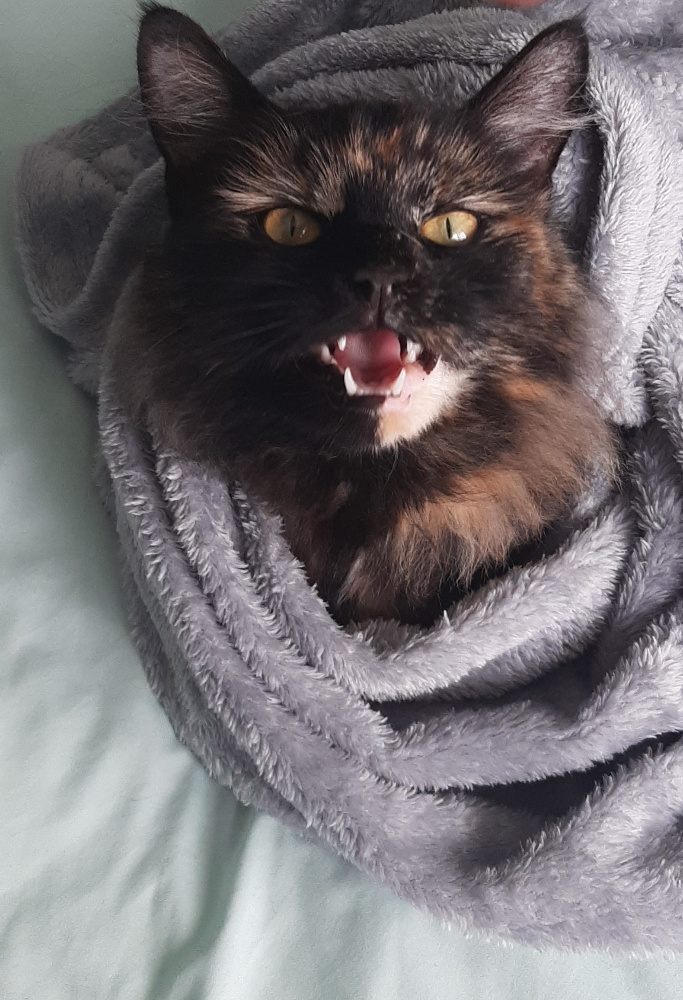

✨✨ Geopolitics ✨✨
Pumpkin is a very opinionated cat. She is not afraid to judge people as needed. One of her favourite things to judge people about is Geopolitics.
✨✨ Global Warming ✨✨
Some people think that this is still a myth. Pumpkin’s response to this is judgement, as seen in the picture to the right. It is not a myth, it is fact. She has to wear extra blankets and a hot water bottle in the winter now — she does not approve.

✨✨ Flat Earth ✨✨
Pumpkin has read some odd theories online — and she judges them fiercely. She’s tested gravity herself by knocking things off tables to prove silly humans wrong.

✨✨ International Relations ✨✨
Pumpkin used to be loved by everyone — until the neighbour’s cat arrived. Now there’s a power struggle for dominance. Pumpkin is not impressed.